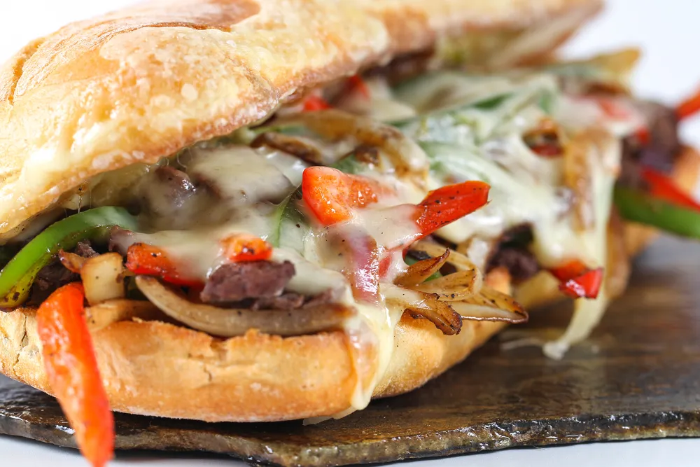

Nerfsteak Sandwich

Description
The Nerfsteak sandwich: combine tender nerf meat, sizzling hot Red Nebula
onions, and blue milk cheese, all on top of a warm pseudogrian roll for
some intergalactic goodness. A favorite at Dex's Diner, this hearty and
simple sandwich will leave even the most hungry wookies satisfied. Nerf
steaks are always kept in the galley of the Millennium Falcon as well, so
if you're feeling snack-ish before leading a rebellion, look no further.
Ingredients
- Nerf steak
- Red Nebula onions
- Blue milk cheese
- Pseudogrian roll
- Black hole pepper
- Serrian salt
Steps
-
Season the raw nerf steak generously using black hole pepper and serrian
salt.
- Chop the Red Nebula onions into long, thin slices.
-
Heat a pan on medium high temperature and add the seasoned nerf steak.
-
Once steak is cooked to your satisfaction, reduce heat and add chopped
Red Nebula onions to the pan until slightly seared.
-
Optional: Use bantha butter and lightly toast pseudogrian roll over low
heat in a pan.
-
Top your sandwich with blue milk cheese, add more salt and pepper as
desired.
- Enjoy.